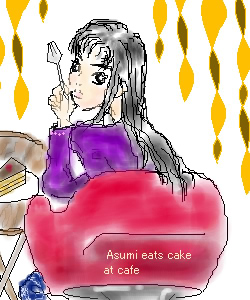

September.2002
あすみ様、第2弾。
『○○の秋』というテーマで『食欲の秋』です。
確かクラシックで舞の分までご飯食べたと言ってましたよね。
私も食べるの大好きで、カフェでこの前ケーキ食べました。
インテリアは全然違うのですが、秋風に適当に描いちゃいました。
一応チョコ好きとしては是非ともチョコケーキを食べて頂きたく、
あすみちゃんにも食べてもらいました♪
服も秋色にしたつもりですが…（下はジーンズですが）どうでしょうか。